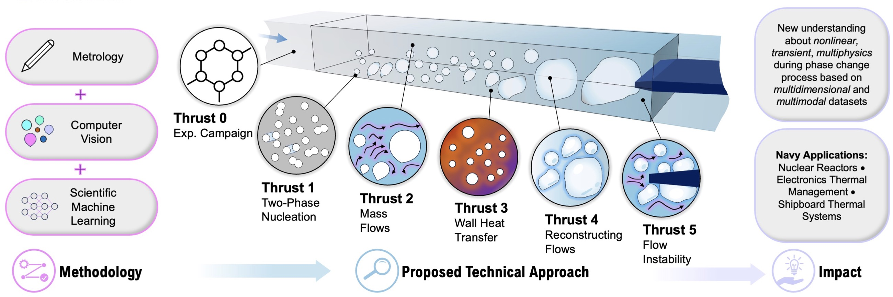
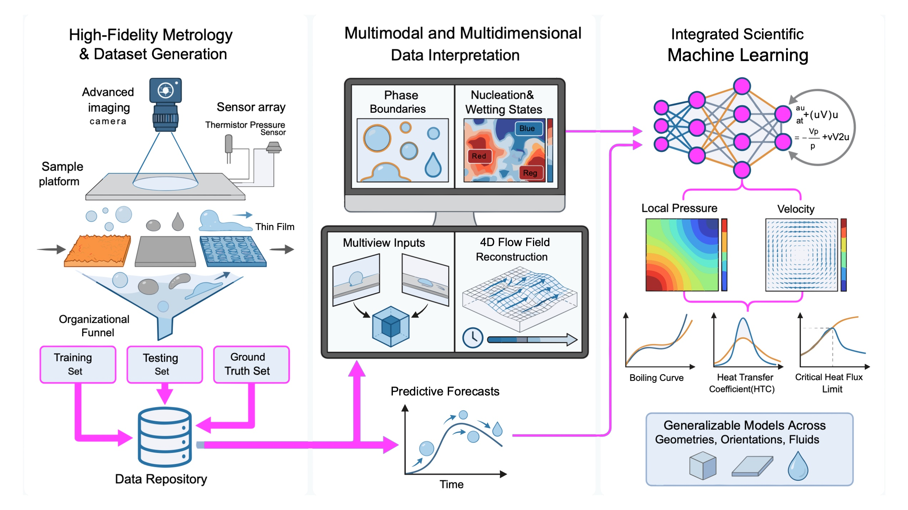

About
Our ML4HEAT aims to enable a new fundamental understanding of phase change mechanisms by investigating long-standing scientific questions. The research will develop an intelligent framework for liquid-vapor phase change physics that integrates advanced metrology with state-of-the-art computer vision (CV) and machine learning (ML) models. The key innovations of the proposed framework are to effectively assemble, interpret, and translate the multimodal, multidimensional, and transient datasets to fully describe the multiphysics nature of phase change heat transfer mechanisms which govern two-phase flows. By learning physics-based priors, the framework will be generalizable, scalable, and explainable, enabling the interpretation of phase change mechanisms for a variety of fluids, flow conditions, and geometries. The advances in phenomenological investigations of complex two-phase flows will advance our understanding about two-phase heat transfer physics and develop new theoretical two-phase frameworks. The research will result in new capabilities for understanding, designing, and operating efficient thermal management systems for Navy power and energy applications. The team consists of researchers from the University of California, Irvine (UCI), Stanford University (Stanford), the University of Illinois Urbana-Champaign (UIUC), and the Massachusetts Institute of Technology (MIT). Our interdisciplinary team has expertise in two-phase flow physics, metrology and experiments, design innovations, CV, and ML for thermofluidic science, and scalable ML models.
Group
Investigators


Group Members
Alumni
- Matthew Hughes (Postdoc 2025) - Assistant Professor, University of Michigan
- Youngjoon Suh (PhD 2023, Postdoc 2025) - Assistant Professor, University of Illinois Chicago
Collaborators
News


Research

High-Fidelity Metrology and Dataset Generation
To anchor our research in physical reality, our team will deploy state-of-the-art metrology to capture interconnected, multiphysics phenomena. By merging advanced imaging techniques with numerical sensor data, we will build the most extensive database of two-phase flows across diverse surfaces and fluids. These high-fidelity datasets—categorized into training, testing, and ground-truth sets—will leverage our existing data repositories to immediately establish robust knowledge pipelines for model development.
Multimodal and 4D Data Interpretation
Current understanding of two-phase heat transfer is often bottlenecked by sparse sensor data and static 2D imagery. We will overcome this by using advanced computer vision (CV) to digitize and assemble multimodal features into a coherent 4D framework (3D space + time). Our CV strategy focuses on four key capabilities: recognizing phase boundaries (bubbles, films, droplets), classifying nucleation and wetting states, reconstructing 4D flow fields from multiview inputs, and generating predictive forecasts of transient flow dynamics.
Integrated Scientific Machine Learning
We will develop explainable and scalable ML models that synthesize physical governing equations with visual and sensor data. By embedding domain knowledge and first-principle constraints directly into the learning process, our models will remain generalizable across varying geometries, orientations, and fluids. This integrated approach allows us to translate multidimensional datasets into actionable physical descriptions—such as local pressure and velocity fields—to ultimately establish theoretical frameworks for predicting boiling curves, HTC distributions, and CHF limits.
Potential Impact on DoD Applications
Two-phase heat transfer is critical for a variety of Navy and DoD systems, and there is a need to design next-generation thermal systems that are efficient, compact, and resilient. The Navy extensively uses two-phase systems for energy conversion (evaporators and condensers in air conditioning and refrigeration), power generation (nuclear reactors), and thermal management. The Navy anticipates increasing electrification of systems across Navy ships and air vehicles that will extensively use power electronics and electrical storage. Specific examples of high-power devices requiring thermal management include phased-array radar, electronic warfare systems, directed energy weapons, and the electromagnetic railgun. The work proposed here will have a direct impact on both large-scale DoD thermal systems, as well as smaller scale distributed DoD compact thermal management approaches. The better understanding about nucleation heat transfer performances as well as the design of effective two-phase flows will allow for highly compact condensers and evaporators that can be deployed in naval applications.

Missing image:assets/research-pillars.jpg.';"
/>
Talks
-
06/2026
Conference chair BucciBoiling and Condensation, June 2026
-
09/2025
Fundamentals of Machine Learning for Phase Change Heat Transfer Won2025 UCI-TAU Conference, 2025, invited speaker
-
08/2025
Fundamentals of Machine Learning for Phase Change Heat Transfer WonThe 11th World Conference on Experimental Heat Transfer, Fluid Mechanics and Thermodynamics (ExHFT-11), Virtual, August 15-18, 2025, invited keynote speaker
-
08/2025
Fundamentals of Machine Learning for Phase Change Heat Transfer WonMini-Workshop, Choong-Ang University, Aug 2025. Hosted by Prof. Hyoungsoon Lee.
-
08/2025
Invited talk MiljkovicKorea Data Center Workshop, Aug 2025
-
08/2025
Keynote presentation Bucci2025 ExHFT conference (online), Aug 2025
-
08/2025
Machine Learning Applications in Two-Phase Heat Transfer for Advanced Thermal Management WonInternational Seminar on Thermal Management in High-Density Data Centers, Seoul, South Korea, August 11-12 2025, invited speaker
-
06/2025
Fundamentals of Machine Learning for Phase Change Heat Transfer WonIIR Conference on Thermophysical Properties and Transport Processes of Refrigerants (TPTPR), the University of Maryland, June 15-18, 2025, invited panel speaker
-
06/2025
Learning from Complexity: Machine Learning for Two-Phase Heat Transfer WonMicro Flow and Interfacial Phenomena (µFIP), June 2025, Santa Babara, CA, invited keynote speaker
-
04/2025
Invited talk ChandramowlishwaranSandia National Lab, April 2025
-
04/2025
Invited talk ChandramowlishwaranLos Alamos National Lab, April 2025
-
01/2025
Keynote presentation Wu2025 Gordon Research Conference, Jan 2025
-
01/2025
Conference chair Miljkovic2025 Gordon Research Conference, Jan 2025
-
02/2025
Applications of Machine Learning for Phase Change Heat Transfer WonASME SHTC 2024, Feb. 2025, ASHRAE Winter Conference, Feb 4-8, Orlando, Florida, invited panel speaker
-
11/2024
Keynote Lecture Bucci20th Brazilian Congress of Thermal Sciences and Engineering, Brazil, Nov 2024
-
09/2024
Keynote Lecture BucciUK Heat Transfer Conference, Sep 2024
-
06/2024
Plenary Lecture BucciEUROTHERM in Slovenia, Jun 2024
-
06/2026
Conference chair BucciBoiling and Condensation, June 2026
-
09/2025
Fundamentals of Machine Learning for Phase Change Heat Transfer Won2025 UCI-TAU Conference, 2025, invited speaker
-
08/2025
Invited talk MiljkovicKorea Data Center Workshop, Aug 2025
-
08/2025
Keynote presentation Bucci2025 ExHFT conference (online), Aug 2025
-
04/2025
Invited talk ChandramowlishwaranSandia National Lab, April 2025